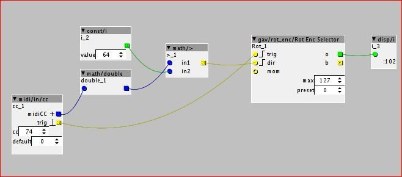

Hi, I have an Arturia Beatstep, and it have a relative mode for encoders where sends values of 64 if the encoder didn't move, 63 if I turned left or 65 if I turned right. There is a way to implement this to control values in Axoloti?
How to implement MIDI relative controllers?
its not supported for midi assignment (e.g. right click, midi cc assign), this would require changes in the patcher ui code.
you could implement this in a patch though, its just how you interpret the messages from midi/in/cc,
(be careful there are a couple of relative encoding schemes, and I'm not sure which one beatstep uses)
Blindsmyth
#4
there is an object by @Gavin for this just search encoder.
It has triggers for inc and decrement.
so you can use math/= 63 and 65 respectivley together with logic/and coming from the trigger of the midi/in/cc object
{kind=link}
Cool thing is you could also tweak the range to get more precision out of it than with standart midi knobs.
p.s. forgot the connection from midi/in/cc trig to both logic/and
UHF
#6
Hello, I tried the above patch and made changes. You only need to detect a greater than 64 value that gives a boolean 1 value to set the direction, the trigger comes from the midi/in/cc. This works with my Arturia Minilab encoders set to relative and allows knob acceleration (but doesn't support it.)

Axoloti controller plan - encoders, touch screen TFT
ricard
#7
I'm on thin ice here since I sold my Beatstep a while ago, and I might be confusing this with the Novation Nocturn, but I believe that turning a knob slowly results in the values 65 or 63 being sent, depending on direction, but turning the knob faster results in larger offsets from 64, e.g. 66 or 67 when turning fast to the right.
If this in fact is the case, then the patch should not just compare against 65, but rather subtract the value 64 from the CC value to get a value to be added or subtracted. It would require changes to the RotEncSelector object in order to accept not just steps of 1 but arbitrarily large steps.
Don't take my word for it though, try it with a MIDI monitor or Axoloti patch to display CC values.
(Side note: The Nocturn does register itself as a MIDI device although it does output MIDI data. There has been a patch in the Linux USB quirks table to recognize it for a while now though; I don't know what there is for other platforms, I think the standard Novation driver can't be coaxed into generating standard MIDI data).
UHF
#8
Yes, you're right, it's got knob acceleration on. I forgot about this. The values are going down to 32 and up to 104 with fast twisting! Either I could check for values >64 (ignoring acceleration - see changed post above) or write a new encoder object - yes just take 64 and add the result to the current value. Thanks.
Blindsmyth
#9
I got a fresh new minilab mk2 here and started to add the control speed because I was annoyed that you could not go from 0 to max in one turn. Now if you go fast you can make almost a full round and if you can slow you can make detailed adjustments in 128steps.
I also started setting up a multilayer setup, since that is what you wanna do with encoders I guess 
Everything works fine so far BUT it looks like a lot of patching, meaning it propably will use quite some ram when I do this 16 times. So somehow this asks for a dedicated object. So I thought I'd share this here and maybe it can serve as a prototype for one the programmers here
{kind=link}
Sebo
#10
I want to add that I get working a patch with the encoders of my Beatstep with a simplified layout similar to the one posted by UHF, even so it eats too much memory. I wanted to do a 8 voice sample based drum machine, so I arranged the 16 encoders to modify sample select and pitch, but after that I didn´t have enough memory for the sequencer or anything else.. I ended using normal CC for the controls...
Blindsmyth
#11
There more objects you have the more ram you use potentially but there is lots of tricks to improve ram usage:
I've found a slightly more elegant solution with my tables. I will stick to this atm and try to persuade one of my programmer friends to make an object for this. I have the slight feeling that this might be quite simple in code actually.
encoders try 4.axp (8.9 KB)
{kind=link}
EDIT:
Here is a version with a subpatch hiding all that patching. Table is in the mainpatch, this is how I prefer to do this usually.
encoders.axp (36.4 KB)
{kind=link}
Counter that can be reset to a specific value